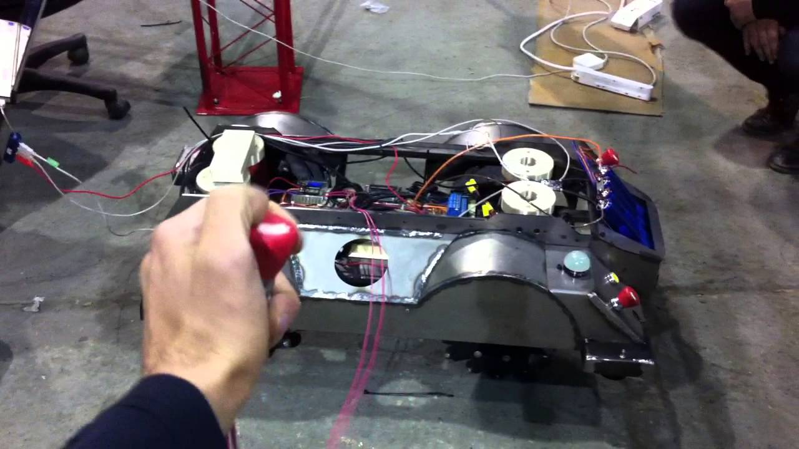
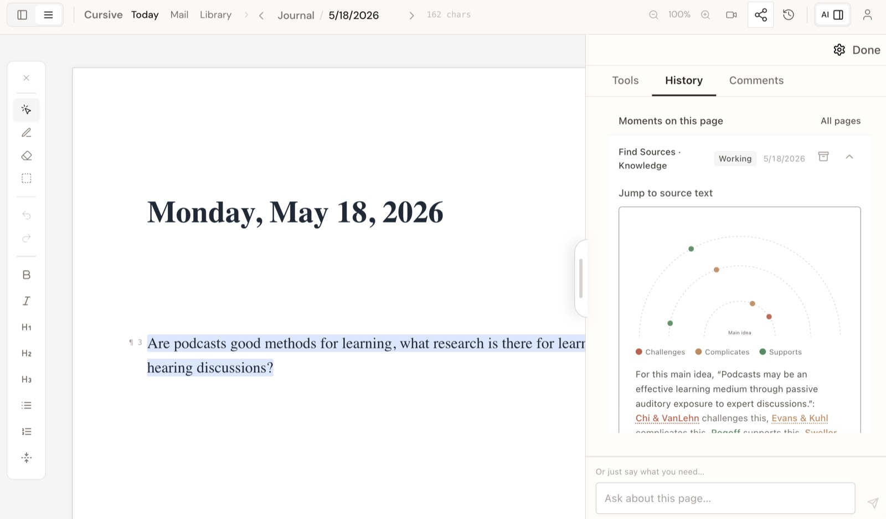
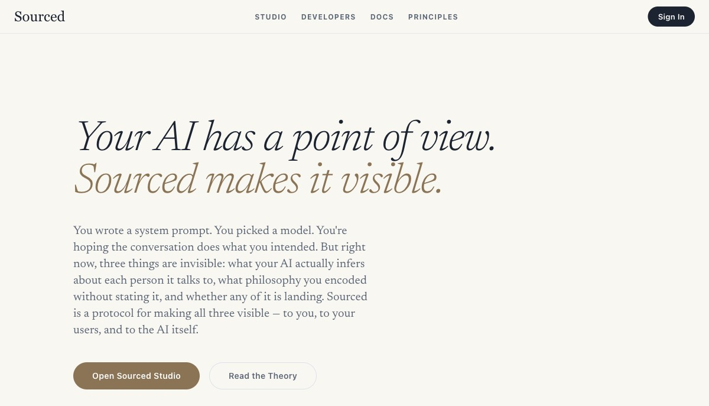

Data protection and AI courses in Lille
I'm Bilal Ghalib. I teach Data Protection in a Master's at the Université Catholique de Lille, and I run half-day AI workshops for school staff, in Lille or Paris.

Courses for schools and teams
A hands-on, case-study course on data protection, and AI workshops shaped to the people in the room.
- For students
A full elective, a short module or a single guest session, shaped to your programme.
- For staff
A half-day AI workshop that helps you meet the EU AI Act's new AI literacy requirement.
- For events
Talks on education, technology and human flourishing.

Cursive and Sourced, from Adab Studio
-
Cursive strengthens your writing
A writing companion that sharpens your thinking, then steps aside.

-
Sourced shows what an AI assumes
See what an AI assumes about you, and correct it.

About me
I'm an Iraqi American living in Lille with my family. In 2009 I co-founded All Hands Active, Ann Arbor's first hackerspace, and two years later Fikra Space, the first in Baghdad.
I then co-founded Bloom, an accelerator that has worked with more than a thousand social entrepreneurs in sixteen countries, and wrote my Learning Sciences thesis at Université de Paris.
سلام من أبي سليمان
What could we make together?
Tell an AI a line about you. It reads my profile and tells you, honestly, where we connect, what we could do together, and where we don't fit.